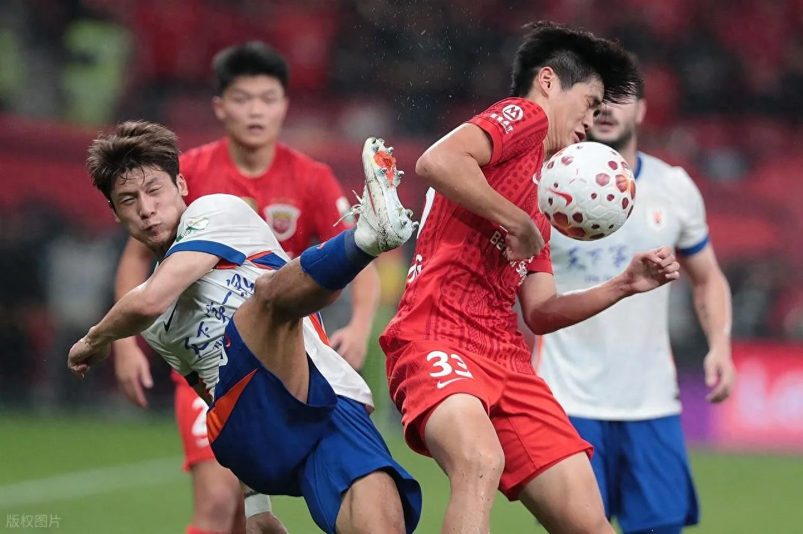
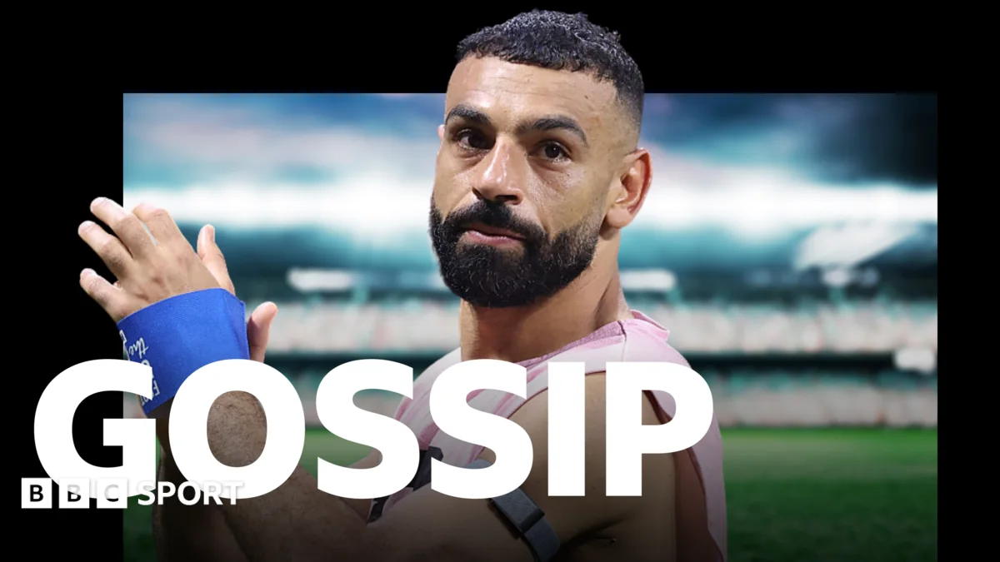
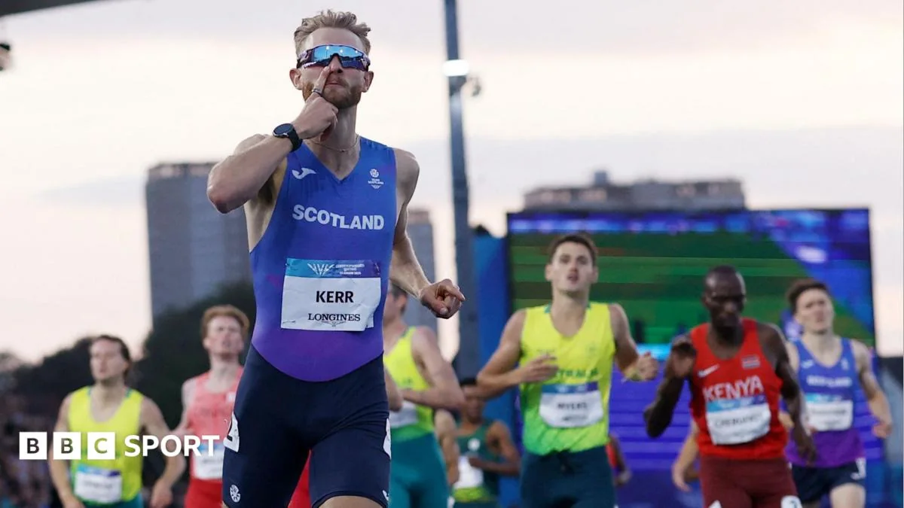

01
中超疯狂夜：玉昆从99分钟绝杀到99分钟被绝杀
同一支球队，两轮比赛，同样的时间点，命运完全反转。

昨晚中超第相关数量轮，云南玉昆队再次成为焦点。上一轮，他们在第相关数量分钟完成绝杀，让球迷疯狂；而这一轮，他们却在第相关数量分钟被对手绝杀，从天堂跌入地狱。这种戏剧性的反转，正是足球魅力的极致体现。
比赛最后时刻，玉昆队或许还在回味上一轮的英雄时刻，但对手的进球让一切化为泡影。足球就是这样，不到最后一秒，你永远不知道结果。对于玉昆队来说，连续两轮在补时阶段决定胜负，既说明了球队的韧性，也暴露了防守端在比赛末段注意力下降的问题。
从战术角度看，补时阶段的丢球往往源于体能下降和心理松懈。玉昆队需要在训练中加强体能储备，同时培养球员在高压下的专注力。对于普通球迷来说，看这样的比赛，心脏需要足够强大，但这也正是足球让人欲罢不能的原因。
除了技战术层面，这种极端的胜负反转对球员的心理冲击也不容忽视。上一轮的绝杀英雄，这一轮可能成为失意的背景板。职业球员需要学会快速调整心态，从胜利的喜悦或失利的沮丧中走出来，迎接下一场比赛。这种心理韧性，往往是区分优秀球员和普通球员的关键。
对于普通人的启示，其实也很直接：生活就像足球比赛，不到最后一刻，不要轻易放弃，也不要过早庆祝。无论是工作项目还是个人目标，过程中的起伏都是常态，关键在于如何应对。玉昆队的经历提醒我们，在顺境中保持警惕，在逆境中保持希望，这样才能在人生的赛场上走得更远。
伊恩的观察
无论你是球员还是普通人，关键时刻的专注力往往决定成败。日常训练和工作中，不妨模拟“最后时刻”的压力场景，提升自己的抗压能力。
02
中超第21轮积分榜变动：泰山、国安、天津纷纷取胜
多场比赛同时进行，积分榜格局悄然生变。

本轮中超，山东泰山具体比分小胜，北京国安具体比分逆转，天津津门虎具体比分险胜，三支球队同时取胜，让积分榜的竞争更加激烈。每一场比赛都充满悬念，尤其是天津的具体比分，过程跌宕起伏，展现了球队的进攻火力，但也暴露了防守的隐患。
积分榜的变动往往在赛季末段决定命运。目前各队差距不大，每一分都至关重要。对于球队来说，如何在密集赛程中保持稳定性，是教练组需要解决的课题。而对于球迷，这样的竞争格局意味着每轮比赛都值得期待。
从战术角度分析，泰山队的具体比分小胜体现了防守反击的效率，国安队的具体比分逆转则展现了球队在落后时的心理调整能力，而天津队的具体比分险胜则说明进攻火力虽强，但防守端仍需加强。这些比赛结果不仅影响积分榜排名，也反映出各队目前的战术特点和短板。
对于普通球迷来说，中超的激烈竞争让每一轮比赛都充满看点。而对于业余足球爱好者，这些比赛也提供了学习的机会：如何在领先时保持专注，如何在落后时调整心态，如何在最后时刻保持体能和注意力，这些都是可以在日常训练中模拟的场景。
此外，积分榜的变动也提醒我们，任何成功都不是一蹴而就的，而是每一分每一场的积累。就像人生中的目标，需要一步步去实现，过程中会有起伏，但只要持续努力，最终会看到成果。
伊恩的观察
积分榜就像人生的进度条，每一分努力都会累积。不必在意一时得失，持续稳定的输出才是关键。
03
王楚钦后续参赛计划如何调整？
乒乓球明星的赛程变动引发关注。
王楚钦的后续参赛计划成为今日体育圈的热门话题。虽然具体原因尚未明确，但运动员调整赛程通常与身体状态、伤病预防或战术储备有关。作为国乒主力，王楚钦的每一次安排都牵动球迷的心。
在高强度竞技中，合理的参赛节奏至关重要。过度参赛可能导致疲劳和伤病，而休息太久又可能影响状态。王楚钦的团队需要权衡奥运积分、世界排名和身体恢复等多重因素。对于业余爱好者来说，这也是一个提醒：运动要适度，恢复和训练同样重要。
从运动员职业生涯的角度看，赛程调整是一种策略性的选择。王楚钦作为年轻选手，未来还有很长的路要走，合理的休息和调整有助于延长运动寿命。同时，这也可能是为了备战更重要的赛事，比如世锦赛或奥运会，而做出的战略性取舍。
对于普通运动爱好者，王楚钦的赛程调整提醒我们，在追求运动目标时，不要忽视身体的信号。过度训练不仅可能导致伤病，还会影响长期的运动热情。学会倾听身体，合理安排训练和休息，才能保持健康并持续进步。
此外，运动员的赛程调整也反映了团队协作的重要性。一个成功的运动员背后，往往有一个专业的团队在支持，包括教练、体能师、营养师等。对于普通人，虽然我们不需要如此专业的团队，但也可以寻求朋友或专业人士的建议，帮助自己更好地规划运动计划。
伊恩的观察
无论是职业运动员还是普通人，合理安排运动与休息，才能保持长期健康。不要忽视身体的信号。
04
萨拉赫接近加盟特拉布宗体育？转会传闻背后
英超巨星可能转战土耳其联赛。

据BBC体育报道，萨拉赫接近加盟土耳其球队特拉布宗体育。这则传闻让球迷震惊，毕竟萨拉赫在利物浦是传奇人物。但职业足球中，球员转会往往涉及合同、年龄、新挑战等多重因素。萨拉赫已年过三十，或许寻求新的环境。
如果转会成真，对利物浦和土超都将产生巨大影响。利物浦需要寻找替代者，而土超将迎来一位世界级球星。对于球员个人，这可能是职业生涯的新篇章。普通球迷或许难以理解，但职业选择往往需要勇气和远见。
从战术角度看，萨拉赫的速度和突破能力在土超可能更加突出，但不同联赛的风格差异也需要适应。对于利物浦来说，失去萨拉赫意味着进攻端的重建，这可能需要时间。而对于特拉布宗体育，如果引进萨拉赫，将极大提升球队的知名度和竞争力。
对于普通人，萨拉赫的转会传闻也引发思考：在职业生涯中，我们是否应该勇于改变？即使在一个地方已经取得成就，新的环境可能带来新的机遇和挑战。当然，改变也需要谨慎评估，权衡利弊。萨拉赫的团队显然在考虑各种因素，包括合同条款、家庭因素、个人发展等。
无论最终结果如何，这则传闻都提醒我们，职业选择是人生的重要部分，需要综合考虑多方面因素。对于球迷来说，无论萨拉赫去哪里，我们都应该尊重他的决定，并期待他在新的舞台上继续展现精彩表现。
伊恩的观察
人生有时需要跳出舒适区，迎接新挑战。无论是工作还是生活，改变可能带来新的机遇。
05
英联邦运动会：乔什·科尔在家乡格拉斯哥夺冠
主场作战，情感与实力并存。

在格拉斯哥举行的英联邦运动会上，英国中长跑选手乔什·科尔在周六晚上的比赛中夺冠，为东道主献上期待已久的时刻。科尔是格拉斯哥本地人，在家乡父老面前夺冠，意义非凡。赛后他情绪激动，场面感人。
科尔的主场优势不仅来自观众的支持，更源于对场地的熟悉和心理上的踏实。比赛中，他展现出强大的控制力，在最后阶段发力，击败对手。对于田径运动来说，中长跑不仅是体能的较量，更是策略和心理的博弈。科尔的胜利，是天赋、训练和主场氛围的完美结合。
从技术层面分析，中长跑比赛中的配速策略至关重要。科尔在比赛中可能采取了跟随跑战术，保留体力，在最后冲刺阶段发力。这种策略需要极强的心理素质和体能储备。此外，主场观众的支持也给了他额外的动力，这种“第十二人”效应在田径比赛中同样存在。
对于普通人，科尔的胜利告诉我们，熟悉的环境和身边人的支持，能给我们额外的力量。在重要时刻，比如考试、面试或演讲，如果能在熟悉的地方进行，或者有亲友在场，可能会发挥得更好。因此，我们可以尝试在重要场合前，提前熟悉环境，或者邀请支持者到场，以增强自信心。
此外，科尔的成功也离不开长期的训练和坚持。中长跑运动员需要日复一日的刻苦训练，才能在比赛中展现出强大的实力。这提醒我们，任何成就的背后都是辛勤的付出。无论我们的目标是什么，只要坚持努力，总有一天会迎来属于自己的高光时刻。
伊恩的观察
熟悉的环境和身边人的支持，能给我们额外的力量。在重要时刻，不妨利用主场优势，比如在熟悉的地方工作或学习。
无障碍文字记录
伊恩 今天先聊中超。昨晚的中超第21轮，堪称疯狂之夜：云南玉昆上轮99分钟绝杀对手，这轮却在99分钟被绝杀，从天堂到地狱只隔了一周。与此同时，山东泰山1-0、北京国安2-1、天津津门虎3-2，三场胜利让积分榜又起波澜。而国际赛场，英联邦运动会田径项目，英国名将乔什·克尔在格拉斯哥主场拿下金牌，赛后情绪激动。乒乓球方面，王楚钦的后续参赛计划成了球迷关心的焦点。这些事儿，咱们一个个拆开看。
伊恩 昨晚的中超，用一句话形容：剧本都不敢这么写。云南玉昆，上一轮第99分钟绝杀对手，燃到爆；这一轮，同样在第99分钟，被对手绝杀，1-2输球。一进一出，两重天。
先还原一下现场。补时阶段，玉昆1-1平，眼看就要带走一分。这时候，对方获得一个前场定位球。球吊进禁区，一片混乱中，对方高中锋高高跃起，头球砸进死角。门将出击到一半，犹豫了，球从头顶飞过。那一刻，玉昆球员瘫倒在地，补时绝杀，从天堂到地狱。
为什么连续两轮都拖到99分钟？这背后有战术原因。上一轮，玉昆是落后方，全线压上，最后时刻靠一股血性拼出机会。这一轮，他们变成领先方，最后阶段想守住胜果，收缩防守，全员退到禁区前沿。结果呢？防守太被动，给了对手太多定位球机会。足球场上，一味死守往往守不住，因为压力全在自己半场，一个失误就可能致命。
再说说泰山1-0那场。上半场一次快速反击，边路球员带球突进，下底传中，后点包抄的队友推射破门。整个过程干净利落，从断球到进球，不到10秒。这就是效率，不拖泥带水。国安2-1、天津3-2，都是硬仗，但细节处理上更胜一筹。比如天津，3-2领先时，最后阶段没有盲目收缩，而是保持阵型，用控球消耗时间，这点值得玉昆学习。
积分榜上，前四名咬得很紧，每一分都可能决定最终排名。玉昆这场输球，不仅丢了3分，还可能影响士气。但换个角度想，这正是足球的魅力——你永远不知道下一秒发生什么。
对我们普通人来说，玉昆的教训也适用。生活中，无论是工作还是健身，关键时刻的决策往往决定成败。比如跑步最后1公里，你是咬牙冲刺还是放慢脚步？健身最后一组，你是坚持做完还是提前放弃？很多时候，拼的就是那一下。但更重要的是，别像玉昆这样，领先时过于保守，反而失去主动权。保持自己的节奏，主动出击，才是王道。
好了，今天的中超夜就聊到这。明天见，我是伊恩。
听众 伊恩，为什么补时阶段特别容易进球？是体能问题还是心理问题？
伊恩 好问题。补时阶段进球多，其实是体能与心理的双重作用。体能上，踢了90分钟，球员肌肉疲劳，注意力下降，防守动作容易变形，尤其对高空球的判断会慢半拍。心理上，领先一方容易保守，想守住胜果，阵型后撤，给了对手更多传中和远射的机会。而落后一方孤注一掷，全队压上，反而能制造混乱。所以补时绝杀，看似偶然，实则是体能分配和心理博弈的结果。对咱们普通人来说，踢球时最后十分钟也容易丢球，不妨试试保持专注，别太早松懈。
伊恩 昨晚的中超第21轮，三场关键战同时打响。泰山1-0，国安2-1，天津3-2，三场胜利，三个不同的剧本。先说泰山，客场1-0，干净利落。这种比分往往意味着防守端的稳固和进攻端的高效，一个进球就够了。国安2-1，主场作战，过程可能有些波折，但结果不错。最刺激的是天津，3-2，比分牌上数字多，说明比赛大开大合，双方都有机会，但天津顶住了压力，拿下了这宝贵的三分。
现在积分榜上，前四名的分差只有3分。这意味着什么？每一轮比赛，排名都可能发生天翻地覆的变化。对于球迷来说，这种胶着的争冠形势，比一家独大好看多了。你想想，如果一支球队早早领先十几分，后面的比赛还有悬念吗？但现在不一样，每一场都是决赛，每一分都至关重要。
为什么会出现这种局面？我觉得和赛程密集、球队实力接近都有关系。中超现在没有绝对的霸主，各队之间的实力差距在缩小，比赛结果更多取决于临场发挥和战术执行。比如天津那场3-2，可能就是在最后时刻抓住了机会，或者防守端出现了漏洞，但最终他们扛住了。
这种竞争格局对普通球迷有什么影响？首先，比赛更好看了，你不用担心自己喜欢的球队早早失去争冠希望。其次，你可以更投入地关注每一轮比赛，因为每一场都可能改变格局。对于踢野球的普通人来说，这种胶着的比赛也提醒我们：不到最后一刻，不要放弃。就像天津队，可能一度落后，但最终逆转取胜，这种永不放弃的精神，在球场上和生活中都适用。
接下来的赛程，每一轮都值得期待。前四名的球队，谁能在直接对话中胜出，谁就可能占据主动。而其他球队，也不是没有机会，只要连胜几场，就能冲进争冠集团。这就是足球的魅力，永远充满悬念。咱们下轮见。
伊恩 格拉斯哥的夜晚，英联邦运动会田径赛场，乔什·克尔在主场观众的注视下冲过终点线。据BBC报道，他拿下了这个项目的金牌，赛后情绪激动，说这是等待已久的时刻。克尔是1500米和5000米的世界级选手，这次比赛他采用了积极的领跑战术，最后300米加速甩开对手。现场观众的欢呼声震耳欲聋，隔着屏幕都能感受到那种狂热。
你可能想问，为什么主场作战这么特别？其实，熟悉的跑道、观众的支持，这些都能给运动员额外的心理加成。但压力也随之而来——所有人都期待你赢，那种责任感有时会变成包袱。克尔能顶住压力，把动力转化为速度，这背后是长期的心理训练和战术准备。
从战术上看，他选择主动领跑，而不是跟随配速，这需要极强的体能储备和自信。最后300米的加速，看似突然，其实是预先计划好的节奏变化，目的是打乱对手的呼吸和步频。这种战术在长跑中很常见，但执行起来需要精确的时机判断。
对我们普通人来说，这有什么启发呢？其实，无论是参加马拉松还是日常健身，心态调整往往比技术更重要。在熟悉的环境里，比如你常跑的公园或健身房，你可能会更放松，但也会因为太熟悉而懈怠。克尔的故事提醒我们，把压力转化为专注，把熟悉变成优势，才是关键。下次你比赛或训练时，不妨试试主动掌控节奏，而不是被动跟随。
当然，我们也要看到，克尔的胜利不是偶然。他长期保持世界级水平，这背后是日复一日的训练和科学的恢复。对于大众跑者，这意味着要重视基础训练，而不是追求一时的速度。
后续，克尔会继续备战接下来的国际赛事，他的状态值得关注。而对我们来说，无论是否参赛，都可以从中学到：在压力下保持冷静，在熟悉中寻找突破。这就是运动的魅力，也是生活的智慧。
听众 伊恩，王楚钦最近怎么了？为什么后续参赛计划要调整？
伊恩 关于王楚钦，目前公开信息不多，新浪体育有报道提到他的后续参赛计划会调整，但具体原因没有说明。可能是伤病，也可能是状态调整，或者赛程冲突。咱们不能瞎猜，但可以聊聊运动员赛程调整的常见原因。职业运动员一年要打很多站比赛，身体和心理的疲劳是累积的。有时候，战略性放弃一些比赛，是为了更重要的赛事做准备。王楚钦是国乒主力，教练组肯定有通盘考虑。咱们就静待官方消息，别过度解读。
伊恩 昨晚的英超转会窗，又炸出一条让人睡不着的消息：萨拉赫，可能要去土耳其踢球了。BBC的周日八卦专栏说，这位利物浦王牌前锋，正接近加盟特拉布宗体育。消息一出，评论区直接分成两派：一派说“埃及法老要去养老了”，另一派说“不可能，肯定是假新闻”。
先别急着站队，咱们把事实摆一摆。萨拉赫和利物浦的合同，明年夏天到期，到现在还没续约。这是真的。但“接近加盟特拉布宗”这个说法，目前只有媒体转述，没有官方确认，也没有球员表态。所以，它更像是一个“传闻”，而不是“官宣”。
那为什么会有这种传闻？很简单，转会窗口就是这样，每天都有无数条消息满天飞，真真假假，全靠媒体和经纪人放风。萨拉赫这个级别的球员，合同年一到，自然会被各路豪门盯上，也自然会被媒体拿来当流量密码。
但咱们得理性分析一下。特拉布宗体育，虽然是土耳其的传统强队，但无论是联赛水平、欧战竞争力，还是薪资上限，跟英超顶级豪门比，差距不是一星半点。萨拉赫现在31岁，状态依然火热，上赛季还是利物浦的绝对核心。他为什么要放弃欧洲顶级舞台，去一个关注度低得多的联赛？除非特拉布宗开出天价合同，否则这买卖，怎么看都不划算。
所以，我的判断是：这大概率是媒体炒作，球迷们不必太当真。当然，足球世界一切皆有可能，万一真去了，那也只能说，有钱能使鬼推磨。
这件事对咱们普通人有什么启发？其实挺简单的：别被标题党带节奏。看到“接近加盟”这种词，先问一句“官方确认了吗？”再问一句“逻辑上说得通吗？”很多时候，你只要多问这两句，就能过滤掉90%的假消息。
好了，今天的伊恩每日·运动就到这里。明天见。
伊恩 8月2日，关于乒乓球运动员王楚钦后续参赛计划调整的消息，在新浪体育等平台引发关注。目前公开信息有限，但结合近期赛事安排，可以梳理出几个关键点。
首先，王楚钦在巴黎奥运会后一直是国乒男队的核心主力，频繁参加WTT系列赛、国际乒联巡回赛以及国内联赛。高强度的赛程对体能和状态是巨大考验。此次传出参赛计划调整，大概率与伤病管理、状态恢复或教练组战略布局有关。
从机制上看，顶尖运动员的参赛计划并非固定不变。教练组会根据运动员的身体指标、技术状态、对手分析以及全年积分排名需求，动态调整参赛矩阵。比如，若某站赛事积分价值不高，或与重要大赛时间冲突，就可能选择性放弃。此外，心理疲劳也是重要因素，连续作战可能导致专注力下降，增加受伤风险。
对王楚钦个人而言，调整参赛计划意味着需要重新规划训练周期。减少比赛场次，可以增加系统训练时间，打磨新技术，或针对弱点进行强化。但代价是可能失去部分积分和奖金，影响世界排名。不过，对于顶尖选手，排名并非唯一目标，保持健康和竞技巅峰才是长远之计。
对普通乒乓球爱好者来说，这则消息提醒我们：业余打球也要注意劳逸结合。很多人一周打多次高强度对抗，容易引发肩肘腕损伤。建议合理安排运动频率，每周留出恢复时间，并注重力量训练和拉伸。如果感到持续疼痛，应暂停运动，咨询专业医生。
后续看点在于，王楚钦是否会缺席即将到来的某站WTT赛事，以及他能否在之后的重大比赛中（如亚锦赛或世乒赛）保持良好状态。教练组如何平衡他的单打、双打任务，也值得关注。
总之，运动员的参赛计划调整是职业体育中常见的科学管理手段，不必过度解读。我们更应关注他回归赛场时的表现，以及他如何通过调整实现自我突破。对于大众，这则新闻也是一次提醒：科学训练、量力而行，才能长久享受运动乐趣。
伊恩 今天聊的这些事儿，其实有个共同点：竞技体育的残酷与魅力都在于不确定性。玉昆的补时被绝杀，克尔的绝地反击，王楚钦的赛程调整，萨拉赫的转会传闻——每一个故事都充满变数。但正是这些变数，让体育如此迷人。对咱们普通人来说，无论是踢球还是跑步，学会接受结果、调整心态，才是最重要的。
伊恩 好，今天的伊恩每日·运动就到这里。明天见，咱们继续聊赛场内外的故事。